Concerts · Dubai · 2017 to 2018 · with Mission Control X
Three nights. One line: Live in Dubai.
Angham. Amr Diab. Mohamed Mounir.
Each name got the same title: a small epithet, the name, the place, the date.
Concerts · Dubai · 2017 to 2018 · with Mission Control X
Three nights. One line: Live in Dubai.
Angham, Amr Diab and Mohamed Mounir. Each name got the same title: a small epithet, the name, the place, the date.
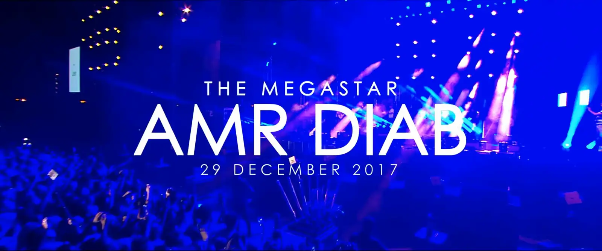
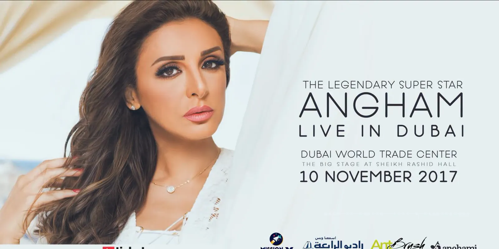
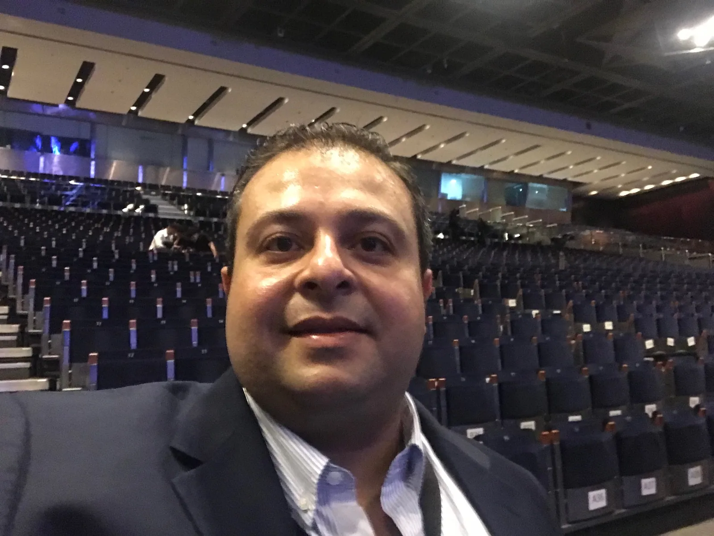
Angham · Dubai World Trade Centre · 10 November 2017
Angham.
The title builds; the name holds.
The same title closed the film and led the campaign.
Eight in the evening. The hall, before the doors opened.
Angham · Dubai World Trade Centre · 10 November 2017
Angham.
The same title closed the film and led the campaign. At eight that evening I was in the hall, before the doors opened.
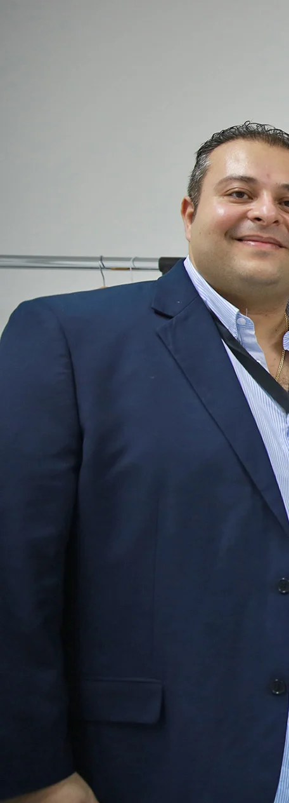
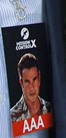
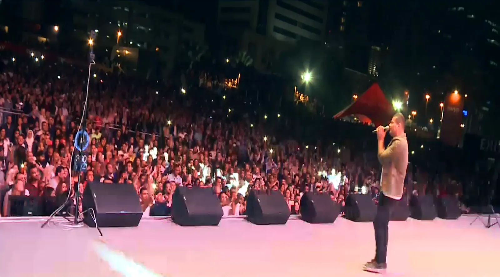
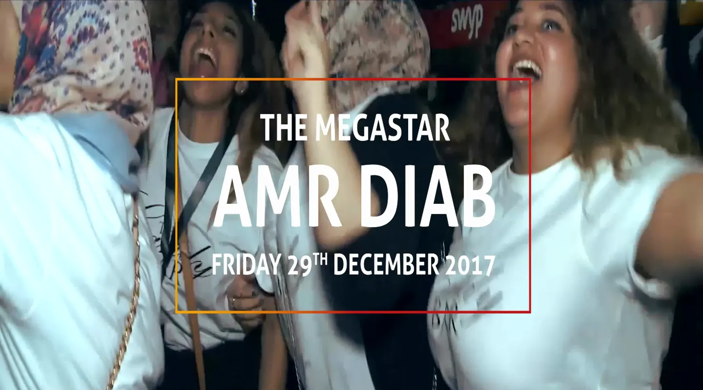
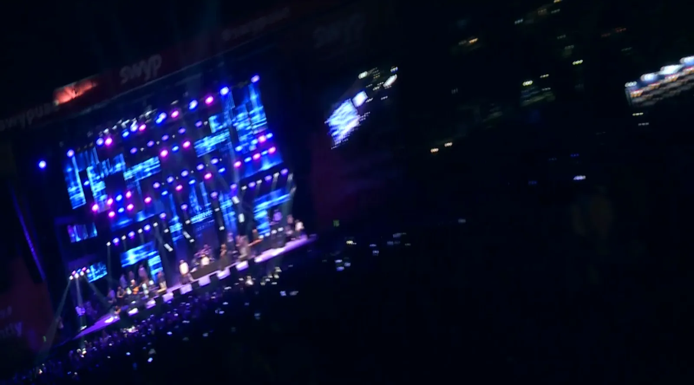
Amr Diab · Dubai Media City Amphitheatre · 29 December 2017
The morning of the show.
That night, from the stage.
A thin frame around a name. That was the whole system.
Presented by SWYP, organised with Mission Control X.
Printed on the artwork: Creative Partner, AntBrush Communications. The sponsor and the venue are not clients.Amr Diab · Dubai Media City Amphitheatre · 29 December 2017
The morning of the show, then the night.
A thin frame around a name: that was the whole system. Printed on the artwork: Creative Partner, AntBrush Communications.
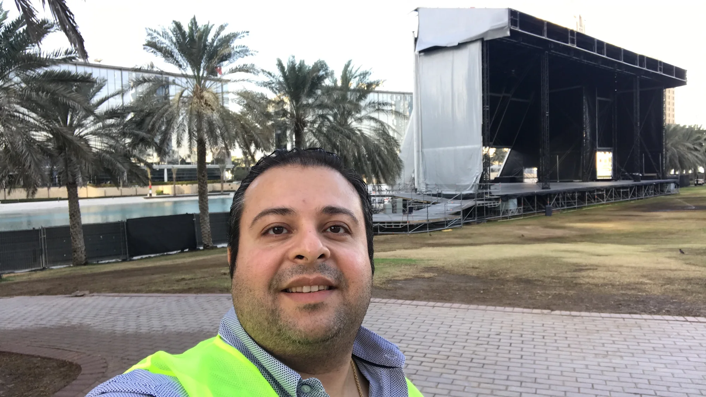
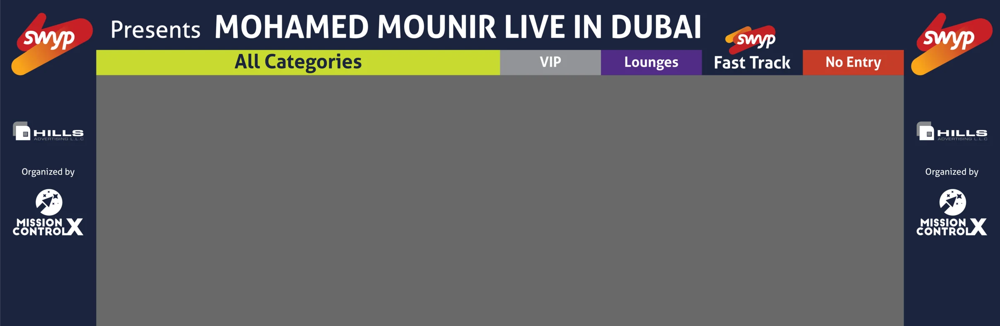
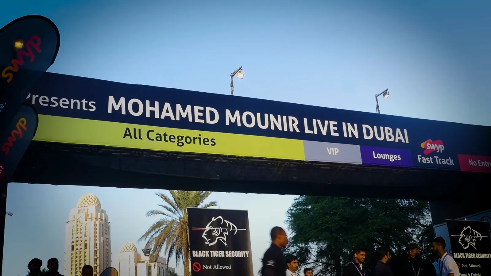
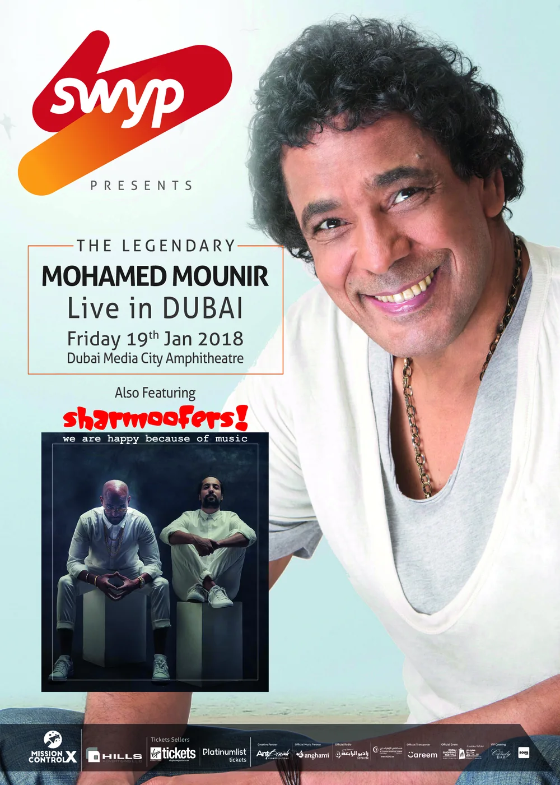
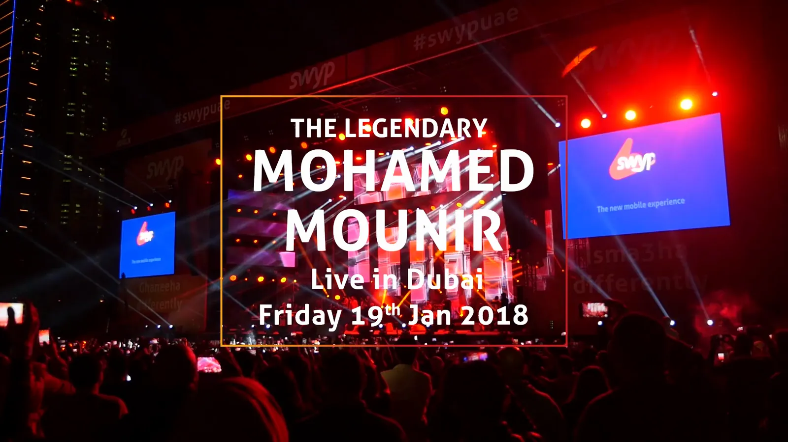
Three weeks on, the same amphitheatre.
Mohamed Mounir · Dubai Media City Amphitheatre · 19 January 2018
The gate as I drew it, and the gate that night.
Sharmoofers opened. Some ticket sections sold out ahead of the night.
Some sections, not the whole concert.Live in Dubai.
My part: partner and co-producer, through AntBrush. Printed on the artwork: Creative Partner, AntBrush Communications.Mohamed Mounir · Dubai Media City Amphitheatre · 19 January 2018
The gate as I drew it, and the gate that night.
Sharmoofers opened. Some ticket sections sold out ahead of the night; not the whole concert.
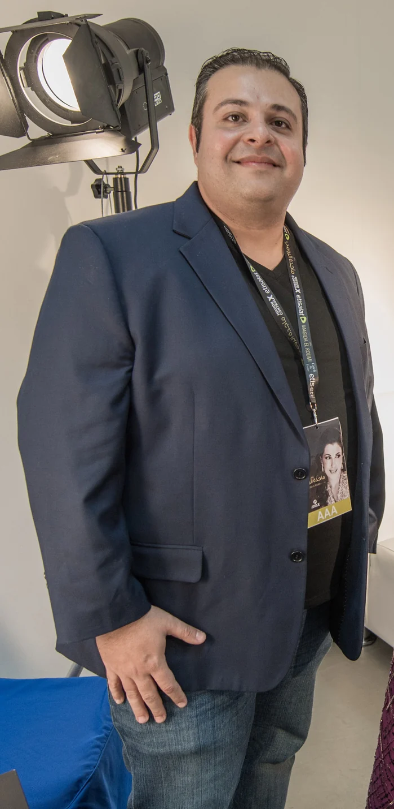
One week later, the same stage: Magida El Roumi.
A season of nights, and I was at every one.
One week later, the same stage: Magida El Roumi.
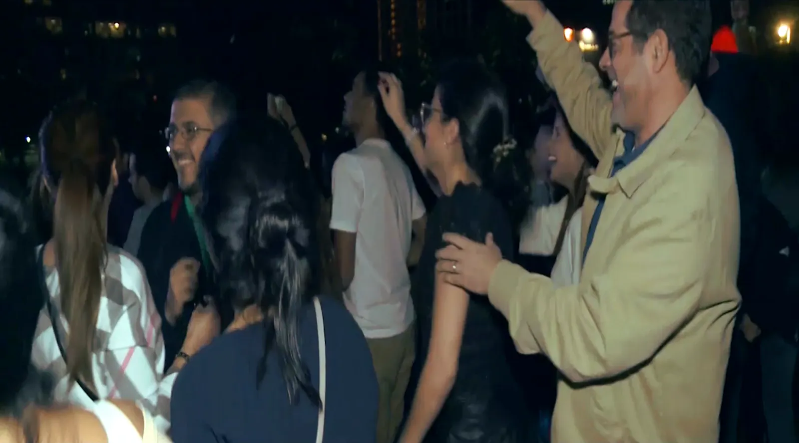
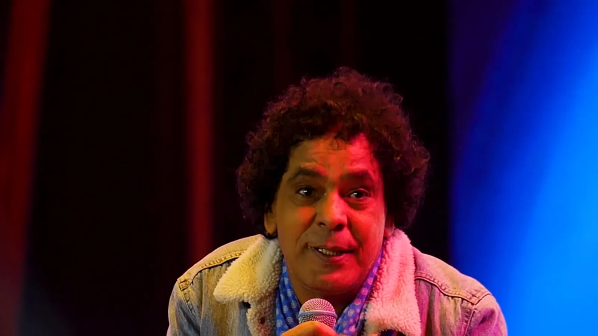
The concerts
- My partPartner and co-producer, through AntBrush, my studio.Printed on the Amr Diab and Mounir artwork as Creative Partner, AntBrush Communications.
- WithMission Control X, who organised the concerts.
- The nightsAngham, Dubai World Trade Centre, 10 November 2017 · Amr Diab, Dubai Media City Amphitheatre, 29 December 2017 · Mohamed Mounir, with Sharmoofers opening, Dubai Media City Amphitheatre, 19 January 2018.
- TicketsSome sections of the Mounir concert sold out ahead of the night.The concert as a whole is not claimed sold out.
- Presented bySWYP, for the Amr Diab and Mounir nights.Sponsors and venues are not clients.
What you saw: title animations and key art from the promo films on the Mission Control X channel · frames and excerpts of the nights' films presented by SWYP · the Mounir gate artwork and English flyer · my own pictures and two by professional cameras on site. Pictures with Arabic lettering are left out or cut at the edge.